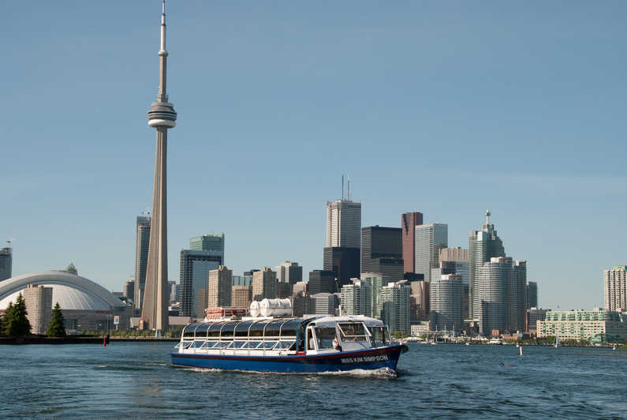
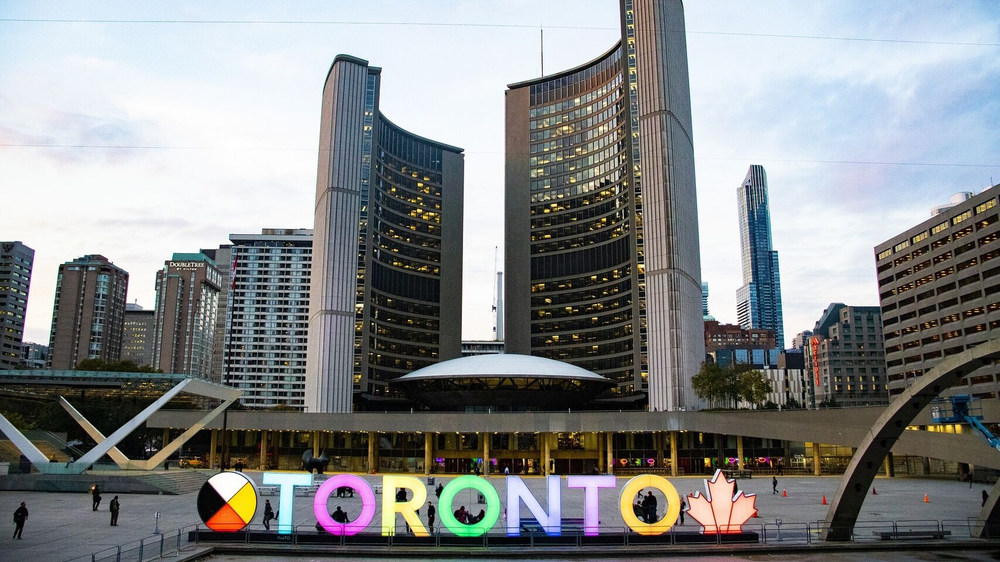

Toronto, la capital de la provincia de Ontario, es una importante ciudad de Canadá ubicada a lo largo de la orilla noroeste del lago Ontario. Es una metrópolis dinámica con un centro de rascacielos altos, todos sobrepasados por la icónica Torre CN. Toronto también tiene muchas áreas verdes, desde el prolijo óvalo de Queen's Park hasta el High Park de 400 acres y sus senderos, instalaciones deportivas y zoológico.
Toronto es famosa por la Torre CN, con 553 metros de altura. La ciudad se considera el centro de la cultura canadiense anglófona y es la anfitriona de muchas celebraciones nacionales.
Los primeros europeos en explorar la región en la que actualmente se asienta Toronto fueron los franceses. De hecho, comerciantes franceses fundaron Fort Rouillé en 1750, pero lo abandonaron en 1759. Durante la Guerra de la Independencia de los Estados Unidos, la región recibió una afluencia de colonos británicos leales al Imperio británico que escapaban a tierras sin colonizar al norte del lago Ontario. Gracias a su puerto natural protegido, el asentamiento sirvió de base naval británica. En 1787, los británicos negociaron en Toronto la compra de Mississauga con un nuevo crédito, a fin de garantizar más de 1000 km² en el área de Toronto.
El clima de Toronto es suave (según los estándares canadienses) debido a su localización meridional dentro del país y a su proximidad al lago Ontario. Tiene un clima húmedo continental (Dfa en la clasificación climática de Köppen), con veranos templados y húmedos y generalmente inviernos fríos, aunque bastante benignos en comparación a los estándares de Canadá y el norte de los Estados Unidos. La ciudad experimenta cuatro distintas estaciones con variaciones considerables en la temperatura diaria, particularmente durante la temporada de clima frío. Debido a la urbanización y a la proximidad al agua, Toronto tiene un rango de temperaturas diurnas bastante bajo, al menos en las zonas urbanas y en las áreas cercanas al lago. En diferentes épocas del año, esta influencia lacustre tiene varios impactos locales y regionales en el clima, como el retraso del comienzo de la primavera y el otoño.
Muchas comunidades residenciales de Toronto expresan un carácter distinto que el de los rascacielos del centro financiero de la ciudad. Edificios de estilo victoriano y eduardiano pueden ser vistos en enclaves como Rosedale, Forest Hill, Cabbagetown, el Annex, el Bridle Path y Moore Park.
La economía de Toronto es una de las más variadas y fuertes de América del Norte. Es el principal centro industrial, comercial y financiero de Canadá, y uno de los principales del continente.
La arquitectura de los edificios de Toronto es en su mayoría contemporánea, aunque algunos de los más antiguos tienen una arquitectura basada en el estilo gótico o en el estilo Art Déco. El cielo de Toronto está dominado por grandes rascacielos. Es la ciudad con los rascacielos más grandes en desarrollo y construcción de todo el hemisferio occidental.
Toronto es un centro de la industria cinematográfica de América del Norte, y la producción de películas domésticas e internacionales es una de las principales fuentes de ingresos de la ciudad. Toronto es el escenario de diversas películas, que suele representar frecuentemente a grandes ciudades americanas como Nueva York y Chicago. Muchas películas americanas se estrenan primero en Toronto antes de ser lanzadas a una mayor escala. La importancia de la industria cinematográfica en la ciudad se pone de relieve con el Toronto International Film Festival (Festival Internacional de Cine de Toronto), el mayor festival cinematográfico del mundo, que rivaliza con el de Cannes en importancia.
El área metropolitana de Toronto es el tercer mayor centro del teatro anglófono del mundo, sólo por detrás de Nueva York y Londres, con más de 90 teatros repartidos por la metrópoli. En Toronto se localizan varios teatros de renombre, y varias compañías teatrales de Canadá también tienen aquí su sede.
Toronto posee seis grandes y modernos centros comerciales. El más conocido de ellos es el Eaton Centre, localizado en el centro de la ciudad, próximo a la Nathan Phillips Square, y uno de los principales puntos turísticos de la ciudad. Otros grandes centros comerciales son el Yorkdale Shopping Centre, el Scarborough Town Centre, los Sherway Gardens y el Fairview Mall, todos con doscientas tiendas o más. Por la ciudad se reparten otros tantos centros comerciales de menor renombre.
Toronto es la única ciudad canadiense con representación en siete ligas deportivas profesionales, contando con equipos en la National Hockey League, Grandes Ligas de Béisbol, National Lacrosse League, National Basketball Association, Canadian Football League, Major League Soccer y American Ultimate Disc League.